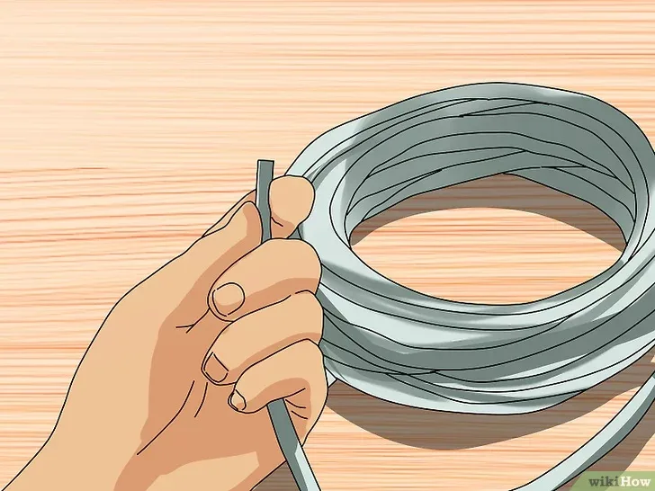
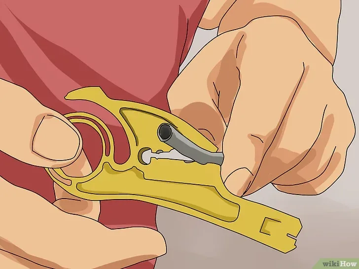
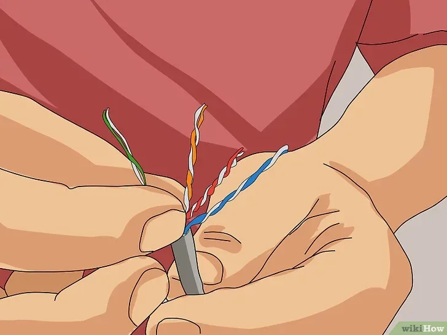
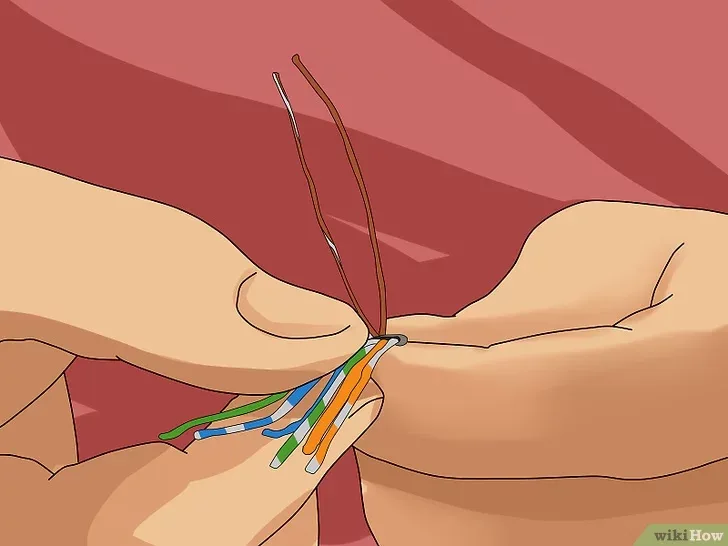
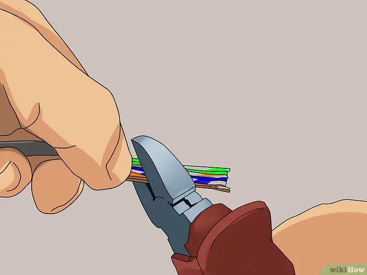
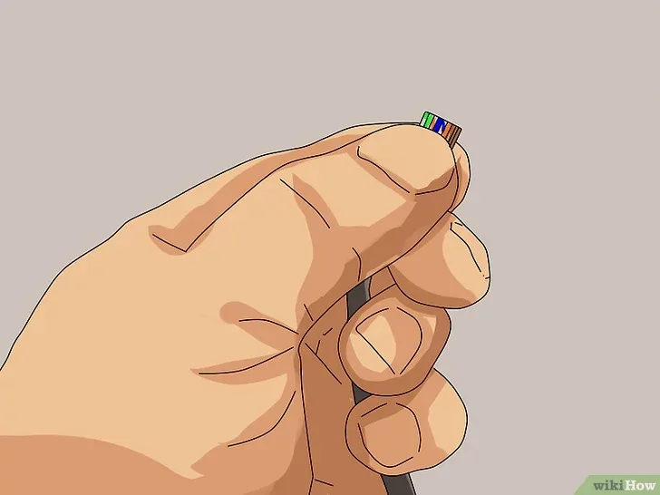
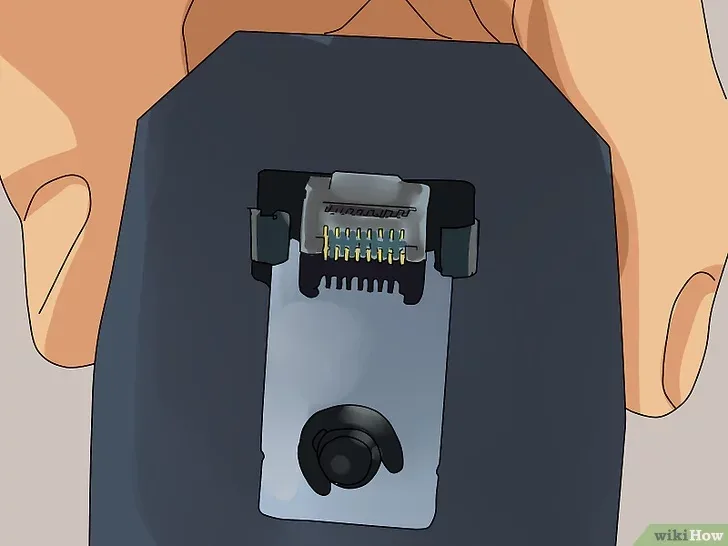
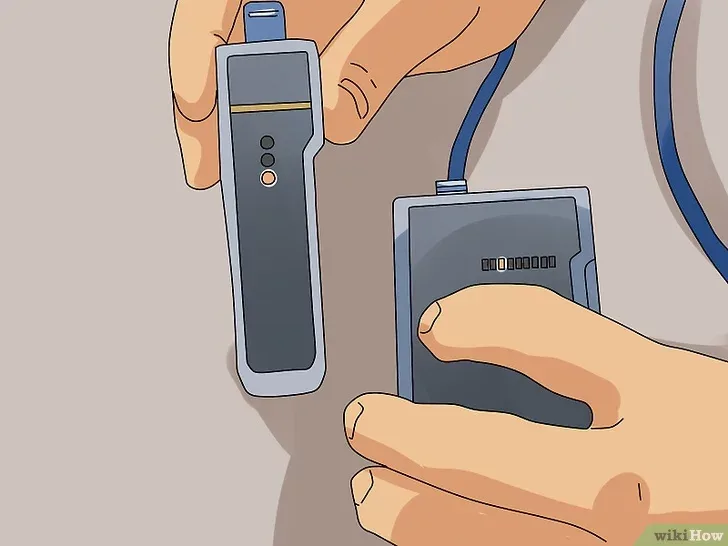
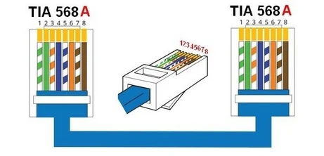

Què farem al taller? 5 min
Treballareu en grups de 2 o 3 alumnes i veureu com es munten els cables UTP. Amb molta cura del material, heu d'aconseguir fer:
- 1 cable directe de 2 m com a màxim (straight-through).
- 1 cable creuat de 2 m com a màxim (crossover). És molt important que funcioni: l'utilitzarem en una altra activitat.
- 1 cable consola d'1,5 m (rollover).
| Material | Per a què serveix |
|---|---|
| Bobina de cable UTP | El cable sense connectors |
| Pelacables | Treu la coberta exterior del cable |
| Grimpadora | Fixa el connector RJ45 al cable |
| Tester | Comprova que cada fil està ben connectat |
| Tornavisos | Calibrar els pelacables |
| Celo | Manté els fils alineats |
| Piles | Perquè el tester s'encengui |
| Caixes i cordes | Guardar els cables acabats |
La nota de l'equip depèn dels cables que us funcionin: 1 cable = 5, 2 cables = 7,5, 3 cables = 10. Cada alumne rep també la seva nota individual.
Pas a pas: com es munta un cable UTP 10 min
Segueix aquests 8 passos amb l'ajuda del professor. Cada foto mostra què has de fer.

Prepara el cableTalla de la bobina el tros que necessitis: 2 m com a màxim (1,5 m per al cable consola).

Pela la cobertaAmb el pelacables, retira uns 2–3 cm de coberta exterior. Gira'l sense tallar els fils de dins.

Separa els parellsObre el cable i separa els 4 parells trenats. Desfés el trenat de cada parell.

Ordena i estira els filsCol·loca els 8 fils segons la norma (A o B) i estira'ls perquè quedin rectes i junts. Pots posar un celo ben aplanat per mantenir-los units.

Talla els fils rectesTalla tots els fils a la mateixa llargada, deixant només el que entra al connector. Millor amb la guillotina que amb les tisores.

Comprova l'extremL'extrem ha de quedar net, pla i amb els colors en ordre. Si no, torna a tallar-lo.

Insereix i grimpaEntra els fils al connector RJ45 fins al fons, posa'l a la grimpadora i prem amb les dues mans i fent força.

Testeja el cableConnecta els dos extrems al tester: han de sortir les llums segons la taula del cable que has fet.
Il·lustracions del document de l'activitat (wikiHow).
Cal fer fotos del procés de creació dels cables i, en acabar, guardar el material on toqui.
Els tres cables i el tester 10 min
Etiqueteu els cables amb el número del vostre grup i deixeu-los a la caixa que toqui. Per al grup 1:
| Cable | Etiqueta | Longitud màxima | Idea clau |
|---|---|---|---|
| Directe (straight-through) | G1_D | 2 m | La mateixa norma als dos extrems |
| Creuat (crossover) | G1_Cr | 2 m | Norma A a un extrem i B a l'altre |
| Consola (rollover) | G1_Rol | 1,5 m | Els pins estan invertits: l'1 va al 8 |

El tester mostra a quin pin de l'altre extrem arriba cada pin. Aquest és el resum que has de veure:
| Pin | Directe A/B | Creuat v1 | Creuat v2 (mirant la pestanya) | Consola |
|---|---|---|---|---|
| 1 | 1 | 3 | 1 | 8 |
| 2 | 2 | 6 | 2 | 7 |
| 3 | 3 | 1 | 7 | 6 |
| 4 | 4 | 4 | 4 | 5 |
| 5 | 5 | 5 | 5 | 4 |
| 6 | 6 | 2 | 8 | 3 |
| 7 | 7 | 7 | 3 | 2 |
| 8 | 8 | 8 | 6 | 1 |
Seguretat al taller (RA6) 10 min
Treballar amb eines de tall i amb petits trossos de fil comporta riscos. Prevenir-los forma part del RA6.
- Ulleres i guants (EPI): les ulleres eviten que un tros de fil et salti als ulls en tallar, i els guants protegeixen les mans de talls.
- Eines segures: fes servir cada eina per a la seva funció (guillotina per tallar, pelacables per pelar), en bon estat i amb cura. Guarda les eines de tall al seu lloc.
- Ordre i neteja: una taula neta evita caigudes i ensopegades. No deixis cables ni trossos a terra.
- Residus: recull els trossos de cable i de coberta, i deixa l'espai final net i ordenat.
- Electricitat: no manipulis equips connectats a la xarxa elèctrica. Els testers funcionen amb piles.
Carrusel per Instagram: treballem segurs 8 min
Prepareu un carrusel de sis diapositives verticals de 1080 × 1350 píxels. Ha de poder entendre's sense llegir el dossier i mostrar una pràctica segura i real del taller.
| Diap. | Títol orientatiu | Contingut obligatori |
|---|---|---|
| 1 | Treballem segurs | Portada, nom de l'activitat i una imatge clara del taller |
| 2 | Abans de començar | Un risc detectat i la correcció aplicada, sense representar una conducta insegura |
| 3 | Protegim-nos | Ús correcte d'ulleres i guants i explicació breu de què prevenen |
| 4 | Cablegem amb seguretat | Una tècnica segura de tall, pelat o crimpat |
| 5 | Comprovem i recollim | Test dels cables i espai final net, ordenat i sense residus |
| 6 | Cinc regles clau | Resum visual de cinc normes de prevenció aplicables al taller |
Condicions de publicació
- Text breu, correcte i en català; imatges pròpies i llegibles.
- No hi poden aparèixer dades personals, música o imatges amb drets, ni marques innecessàries.
- Lliureu el carrusel en PDF o PNG i també l'enllaç editable.
- Només podrà ser seleccionada una peça que mostri procediments segurs i cables comprovats.
- La publicació final depèn de la revisió del professorat i de les autoritzacions d'imatge necessàries.
Exercicis pràctics 40 min
Practica ara tot el que has après a la teoria. Cada bloc correspon a un apartat.
Què farem al taller?
Material i funció
Toca un concepte i després la seva parella.
Més exercicis
Exercicis nous cada vegada: practica tantes vegades com vulguis.
Pas a pas: com es munta un cable UTP
Munta un cable UTP
Usa les fletxes per ordenar els passos.
- Pela la coberta
- Ordena i estira els fils
- Comprova que l'extrem queda net
- Insereix al RJ45 i grimpa
- Talla els fils rectes
- Testeja el cable
- Separa els parells
- Prepara el cable de la bobina
Reconeix les eines
Completa
Tria la resposta correcta a cada desplegable.
- Per tallar els fils ben rectes s'usa la .
- El connector que es fixa amb la grimpadora és el .
- El cable es comprova amb el .
Més exercicis
Exercicis nous cada vegada: practica tantes vegades com vulguis.
Els tres cables i el tester
Quin cable és?
Arrossega els conceptes a la caixa correcta (o toca un concepte i després la caixa).
Directe
Creuat
Consola
Llegeix el tester
Tria la resposta correcta a cada desplegable.
- Al cable directe, el pin 1 arriba al pin .
- Al cable creuat (v1), el pin 1 arriba al pin .
- Al cable consola, el pin 1 arriba al pin .
Més exercicis
Exercicis nous cada vegada: practica tantes vegades com vulguis.
Seguretat al taller (RA6)
Pràctica segura o insegura?
Arrossega els conceptes a la caixa correcta (o toca un concepte i després la caixa).
Segura
Insegura
EPI
Decideix si cada frase és vertadera o falsa.
Les ulleres eviten que un tros de fil et toqui els ulls.
Per això són un EPI al taller.
Les tisores són millor que la guillotina per tallar rectes els fils.
La guillotina talla més recte i amb més seguretat.
Més exercicis
Exercicis nous cada vegada: practica tantes vegades com vulguis.
Carrusel per Instagram: treballem segurs
Les 6 diapositives
Ordena-les de la 1 a la 6. Usa les fletxes per ordenar els passos.
- Cinc regles clau
- Cablegem amb seguretat (tall, pelat o crimpat)
- Comprovem i recollim (test i espai net)
- Treballem segurs (portada)
- Abans de començar (risc i correcció)
- Protegim-nos (ulleres i guants)
Condicions de publicació
Decideix si cada frase és vertadera o falsa.
Es pot fer servir música amb drets d'autor al carrusel.
No hi poden aparèixer música ni imatges amb drets.
Les imatges han de ser pròpies i llegibles.
Aquesta és una de les condicions.
El carrusel es lliura en PDF o PNG i també amb l'enllaç editable.
Cal lliurar ambdues coses.
Hi poden sortir dades personals dels companys.
No hi poden aparèixer dades personals.
Més exercicis
Exercicis nous cada vegada: practica tantes vegades com vulguis.
Repàs final
Test d'autoavaluació
Més exercicis
Exercicis nous cada vegada: practica tantes vegades com vulguis.
Activitat
Consulta l'activitat al teu Classroom
Ara que ja has vist la teoria i has practicat, fes l'activitat B1 · Projecte de cablejat UTP (taller en grup). La trobaràs a Classroom, dins de l'AEA2.